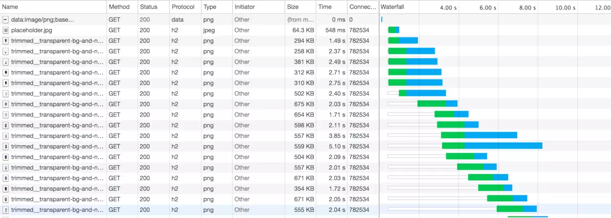
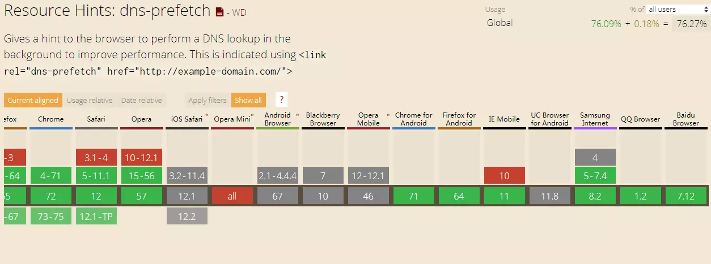
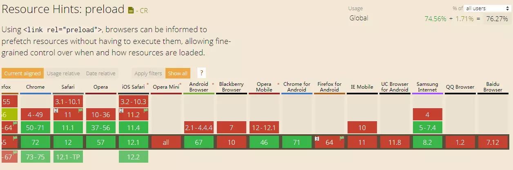
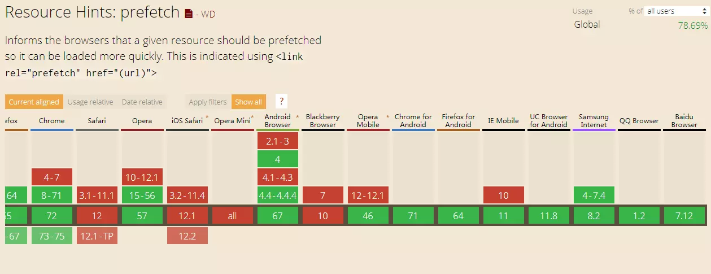
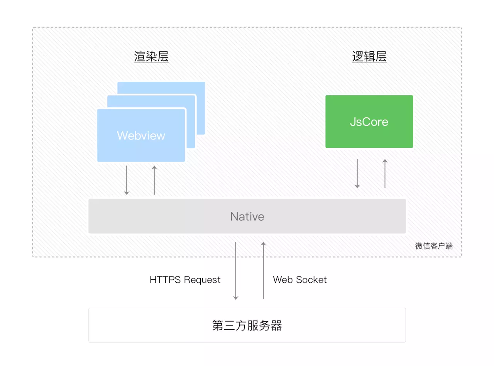
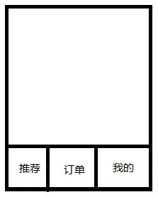
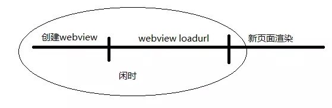
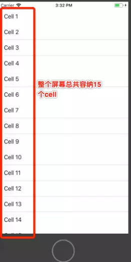
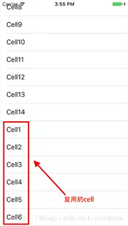

关于前端性能优化相关的技术知识，网上随便搜一些就有很多，本文将系统性的从初级到高级的思路，总结移动前端性能优化各个方面的相关技术点，内容来自笔者以往经验的总结，希望读者可以花些时间看看。
在目前大多数刚从事前端开发，或者是正在学习前端开发的同学来说，性能优化对于他们可能还比较远，但是脱颖而出，拉开差距的点，往往就在与性能优化，和理论知识不同，性能优化往往来自日常的工作经验中总结而来，也是目前大厂面试前端必问的知识点，所以重要性就不言而喻了。
一，入门篇
首先，重要的事情说三遍：
移动web性能优化原理知识同样适用于PCweb端！ 移动web性能优化原理知识同样适用于PCweb端！ 移动web性能优化原理知识同样适用于PCweb端！
1.资源合并与压缩
为什么要压缩？
不同于大部分放在服务端的后台代码，前端所有的文件程序代码都是要通过浏览器下载下来运行使用，这就牵扯到网络和请求延时，所以前端文件的精简和压缩决定了前端性能的第一步。
介于目前的前端框架类库，webpack，vue-cli等等，已经可以直接将这一步操作集成到我们的系统项目中了，可以直接查看各个框架的文档来进行配置，单纯的使用原生技术，可以参考下面：
html的压缩
HTML代码压缩就是压缩这些在文本文件中有意义，但是在HTML中不显示的字符，包括空格,制表符,换行符等，还有一些其他意义的字符，如HTML注释也可以被压缩。
- Nodejs的html-minifier。
- 在线压缩工具，站长工具等等。
CSS和JavaScript文件的压缩
JavaScript压缩，主要是去除多余的换行和空格等等，对于语法来说，JavaScript可以选择混淆压缩和非混淆压缩，无论哪种压缩都是为了减少JavaScript的文件大小，当然出于前端代码保护来看，混淆压缩会大大破坏原有的阅读逻辑，增加压缩比，从而给代码添加一层保护。 CSS压缩，同理是去除多余的换行和空格等等，由于CSS文件的特殊性暂时无法实现混淆压缩，压缩主要是将大量的换行去除，可以减少不少的文件大小。
图片的压缩
对于常见的前端项目，关于图片的使用，主要有以下两种：
- 固定图标，背景，按钮icon等等，这些图片有一个特点就是固定和用户无关，一般是放在源码包里面，由前端代码直接引入。
- 人物头像，文章配图，内容图片等等，这些非固定图片一般由用户上传，有很强的用户性，这些图片一般放在
CDN上，前端通过链接请求。
- 对于固定图片，推荐tinypng.com/在线压缩之后再进行引入，支持png，jpeg类型的图片，属于有损压缩，去除图片一些不必要的元数据，把相似像素的24bit位用8bit位来表示，肉眼很难区分，压缩率70%。
- 采用CSS雪碧图：把你的网站用到的一些图片整合到一张单独的图片中：
优点：减少HTTP请求的数量(通过
backgroundPosition定位所需图片)。 缺点：整合图片比较大时，加载比较慢(如果这张图片没有加载成功，整个页面会失去图片信息)。 - 对于非固定图片，常见的优化压缩主要有以下几种原则：
优先使用压缩率高的
jpeg类型图片，缺点是不支持透明。 有条件的话使用webP(一种Google开发的新类型)类型图片是最佳选择，相比于jpeg，有更小的文件尺寸和更高的图像质量。
资源合并
在前端编码的时候将css、js等静态资源文件合并压缩之外，我们还可以在页面中将多个css、js的请求合并为一个请求。文件的合并带来的是http请求数的减少，尤其是在移动端，每一个http请求带来的是慢启动，三次握手，连接建立，所以资源的合并是由为重要的，合并和不合并对比：
2.浏览器加载原理优化
HTML页面加载渲染的过程：
根据上图我们来屡一下整个流程：
- 当浏览器从服务器接收到了HTML文档，并把HTML在内存中转换成DOM树，在转换的过程中如果发现某个节点(node)上引用了CSS或者 IMAGE，就会再发1个request去请求CSS或image,然后继续执行下面的转换，而不需要等待request的返回，当request返回 后，只需要把返回的内容放入到DOM树中对应的位置就OK。
- 但当引用了JS的时候，浏览器发送1个js request就会一直等待该request的返回。
- 因为浏览器需要1个稳定的DOM树结构，而JS中很有可能有代码直接改变了DOM树结构，浏览器为了防止出现JS修改DOM树，需要重新构建DOM树的情况，所以 就会
阻塞其他的下载和呈现。 那么如何解决和避免阻塞的问题呢，我们通过测试代码分别测试不同情况下引入js和css的问题如下：
<!DOCTYPE html>
<html>
<head>
<title>test</title>
<link rel=”stylesheet” type=”text/css” href=”stylesheet.css” media=”screen”>
<link rel=”stylesheet” type=”text/css” href=”page-animation.css” media=”screen”>
<script type =”text/javascript” >复制代码测试过程省略，可以参考这里，我们可以得到如下的结论：
- 浏览器存在并发加载：资源请求是并发请求的。
- 浏览器中可以支持并发请求，不同浏览器所支持的并发数量不同（以域名划分），以Chrome为例，并发上限为6优化点： 把CDN资源分布在多个域名下。
- css 在head中通过link引入会阻塞页面的渲染，处于页面样式，我们必须这样放置。
- 直接通过
<script src>引入的外部js会阻塞后面节点的渲染，所以外部js尽量放在body底部。 - 在head里面尽量不要引入js。
- 如果要引入js 尽量将js内嵌。
- 把内嵌js放在所有link引入css的前面。
- 对于要阻塞后续内容的的外部js
<script src>，需要增加defer来解决。
3.缓存优化
如果一个H5页面没有利用任何缓存，那么这个页面将没有任何存在的意义。
从从HTTP协议缓存，到浏览器缓存，再到APP Cache，一直在最近比较火的Service worker，我们可以选择多种的缓存方式，入门基本来说说HTTP协议缓存：
强缓存：Expires&Cache-Control
当浏览器对某个资源的请求命中了强缓存时，返回的HTTP状态为200，在chrome的开发者工具的network里面 size会显示为from disk cache，这种情况下是不用发送任何请求，如下图
- Expires：指定了在浏览器上缓冲存储的页距过期还有多少时间，等同Cache-control中的max-age的效果，如果同时存在，则被Cache-Control的max-age覆盖。
- Cache-Control：
- public：响应被缓存，并且在多用户间共享。
- private：默认值，响应只能够作为私有的缓存(e.g., 在一个浏览器中)，不能再用户间共享；
- no-cache：响应不会被缓存,而是实时向服务器端请求资源。
- max-age：数值，单位是秒，从请求时间开始到过期时间之间的秒数。基于请求时间（Date字段）的相对时间间隔，而不是绝对过期时间；
协商缓存：Last-Modified&Etag
当浏览器对某个资源的请求没有命中强缓存，就会发一个请求到服务器，验证协商缓存是否命中，如果协商缓存命中，请求响应返回的http状态为304并且会显示一个Not Modified的字符串，比如你打开京东的首页，按f12打开开发者工具，再按f5刷新页面，查看network，可以看到有不少请求就是命中了协商缓存的：
- Last-Modified/If-Modified-Since：本地文件在服务器上的最后一次修改时间。缓存过期时把浏览器端缓存页面的最后修改时间发送到服务器去，服务器会把这个时间与服务器上实际文件的最后修改时间进行对比，如果时间一致，那么返回304，客户端就直接使用本地缓存文件。
- Etag/If-None-Match：(EntityTags)是URL的tag，用来标示URL对象是否改变，一般为资源实体的哈希值。和Last-Modified类似，如果服务器验证资源的ETag没有改变（该资源没有更新），将返回一个304状态告诉客户端使用本地缓存文件。Etag的优先级高于Last-Modified，Etag主要为了解决
- Last-Modified 无法解决的一些问题。
- 文件也许会周期性的更改，但是他的内容并不改变，不希望客户端重新get；
- If-Modified-Since能检查到的粒度是s级；
- 某些服务器不能精确的得到文件的最后修改时间。
4.懒加载与预加载
懒加载对于移动web端，尤其是最常见的滚动加载场景是一项非常重要的优化措施。而预加载则常常应用于多tab场景的页面，让用户更快的看到打开的下一个页面。
懒加载
- 图片进入可视区域之后请求图片资源。
- 对于电商等图片很多，页面很长的业务场景适用。
- 减少无效资源的加载。
- 并发加载的资源过多会会阻塞js的加载，影响网站的正常使用。
img src被设置之后，webkit解析到之后才去请求这个资源。所以我们希望图片到达可视区域之后，
img src才会被设置进来，没有到达可视区域前并不现实真正的src，而是类似一个1px的占位符。
预加载
- 图片等静态资源在使用之前的提前请求。
- 资源使用到时能从缓存中加载，提升用户体验。
- 点击操作前预先加载下一屏数据。
ok，读到这里，对于一些刚入门的前端玩家，或者是还在学习前端的同学，掌握了上面的入门级性能优化基础知识，才能算是基本的合格，真正更进一步的优化，更适合移动端web的性能点，可以参考进阶版：
二，进阶篇
1.资源合并与压缩
启用GZIP
gzip是GNUzip的缩写，最早用于UNIX系统的文件压缩。HTTP协议上的gzip编码是一种用来改进web应用程序性能的技术，web服务器和客户端（浏览器）必须共同支持gzip。目前主流的浏览器，Chrome,firefox,IE等都支持该协议。常见的服务器如Apache，Nginx，IIS同样支持gzip。 gizp流程：
- 浏览器请求url，并在request header中设置属性accept-encoding:gzip。
- 服务器支持gzip，response headers返回包含content-encoding:gzip。
- 开启gzip可以达到80%的压缩率，即1MB的文件下载下来只需要200K，大大减少传输效率，是一项非常重要的资源压缩手段。
Nginx中开启gzip：
升级HTTP/2.0
HTTP/2是HTTP协议自1999年HTTP 1.1发布后的首个更新，主要基于SPDY协议（是Google开发的基于TCP的应用层协议，用以最小化网络延迟，提升网络速度，优化用户的网络使用体验）。
优化原理：
根据上文中说的资源合并问题，浏览器可以同时建立有限个TCP连接，而每个连接都要经过慢启动，三次握手，连接建立，HTTP1.1为了解决这个问题推出了keep-alive，即保持连接不被释放，但是真正的这些连接下载资源是一个线性的流程：一个资源的请求响应返回后，下一个请求才能发送。这被称为线头阻塞，为了彻底解决此问题，HTTP2.0带来了多路复用：
合并资源 vs 并行加载资源？
现在回过头来探讨一下上文说的资源合并问题，有了HTTP2.0之后，我们是否还需要合并资源，目前看需要遵循下面的原则：
-
停止合并文件 在HTTP/1.1中，CSS，JavaScript被压缩到了一个文件，图片被合并到了一张雪碧图上。合并CSS、JavaScript和图片极大地减少了HTTP的请求数，在HTTP/1.1中能获得显著的性能提升。 但是，在HTTP/2.0中合并文件不再是一个好的办法。虽然合并依然可以提高压缩率，但它带来了代价高昂的缓存失效。即使有一行代码改变了，整个文件就要重新打包压缩，浏览器也会强制重新加载新的文件。
-
尽量不要在HTML里内联资源 非特殊的代码（rem适配代码，上报代码等）之外，尽量不要使用内联资源，在极端情况下，这确实能够减少给定网页的HTTP请求数。但是，和文件合并一样，HTTP/2优化时你不应该内联文件。内联意味着浏览器不能缓存单个的资源。如果你将所有页面使用的CSS声明嵌入了每一个HTML文件，这些文件每次都要从服务端获取。这导致用户在访问任何页面时都要传输额外的字节。
-
合并域名 拆分域名是让浏览器建立更多TCP连接的通常手段，浏览器限制了单个服务器的连接数量，但是通过将网站上的资源切分到几个域上，你可以获得额外的TCP连接，但是每个拆分的域名都会带来额外的DNS查询、握手，新连接的建立，根据HTTP2.0多路复用的原则：HTTP2采用多路复用是指，在同一个域名下，开启一个TCP的connection，每个请求以stream的方式传输，域名的合并可以带来更多的多路复用，如下图在chrome的Network面板中查看HTTP2.0，注意protocol和ConnectID相同则表示启用复用:

合理使用icon类图片base64化
<img src="data:image/gif;base64,R0..."/>
复制代码在页面使用的背景类图片icon类图片，不多且比较小的情况下，可以把图片转成base64编码嵌入到html页面或者CSS文件中，这样可以减少页面的HTTP请求数。需要注意的是，要保证图片较小，一般超过5kb的就不推荐base64嵌入显示了。为什么是5kb？。 同时，采用Webpack的url-loader可以帮我们在不影响代码可读性的情况下，解决base64字符串问题。
Icon Font
IconFont技术起源于Web领域的Web Font技术，它是把一些简单的图标制作成字体，然后让图标变成和字体一样使用，Icon 的设计和使用在近几年的发展中，也经历了由当初的 img 方案 到现如今的 svg 方案，有以下优点：
- 字体是矢量的，所以可以随意改变大小。
- 因为它是字体，所以所有字体的css都可以使用，比如font-size，color，background，opacity等。
- 减少图片请求数。
- iconfont没有兼容性问题，IE6，Android2.3都能够兼容。
2.浏览器加载原理优化
首屏资源优化
-
剥离首屏资源 首屏的快速显示，可以大大提升用户对页面速度的感知，因此应尽量针对首屏的快速显示做优化，基于联通3G网络平均338KB/s(2.71Mb/s)，所以首屏资源不应超过1014KB，剥离首屏需要的资源，非首屏的资源单独合并，采用懒加载。这个原则适用上文的资源合并和加载中的场景。
-
按需加载 将不影响首屏的资源和当前屏幕资源不用的资源放到用户需要时才加载，可以大大提升重要资源的显示速度和降低总体流量，对于移动web端常见的多tab页面，Webpack的Code Splitting帮助我们更加便捷实现按需加载。
-
非首屏图片Lazyload 不用多说，在目前流量费用还算比较高昂的情况下，帮助用户节省更多的流量可以避免用户的投诉，为了保证页面内容最小化，加速页面渲染，尽可能节省首屏网络流量，页面中的图片资源推荐使用懒加载实现，在页面滚动时动态载入图片。
使用CDN
CDN是将源站内容分发至最接近用户的节点，使用户可就近取得所需内容，提高用户访问的响应速度和成功率。解决因分布、带宽、服务器性能带来的访问延迟问题，适用于站点加速、点播、直播等场景。 对于web页面来说，将项目的js，css等静态资源存放在CDN是一个重要的优化手段，加入所有资源统一打包放在同一个域名下，很难达到用户就近获取的优势（目前最佳实践是html页面采用一个域名，静态资源文件采用CDN域名），所谓静态资源即是可以被浏览器缓存的资源，而对于html页面，由于是js和css等链接的入口，通常不采用缓存。常用的阿里云CDN和腾讯云CDN都有开放接口，开发者可以按需选择。
预加载
此预加载主要分为两个部分，一种是采用原生浏览器支持的API来对页面的一些资源进行预先拉取或者加载，另一种是通过自己写逻辑来加载一些重要的资源，立即下面内容的前提是要立即目前移动web常见的hybrid架构，webview外壳+H5页面：
-
DNS预解析（dns-prefetch） DNS 作为互联网的基础协议，其解析的速度似乎很容易被网站优化人员忽视。现在大多数新浏览器已经针对DNS解析进行了优化，典型的一次DNS解析需要耗费 20-120 毫秒，减少DNS解析时间和次数是个很好的优化方式。DNS Prefetching 是让具有此属性的域名不需要用户点击链接就在后台解析，而域名解析和内容载入是串行的网络操作，所以这个方式能 减少用户的等待时间，提升用户体验 。
<link rel="dns-prefetch" href="//haitao.nos.netease.com"> 复制代码 -
Preload 和 Prefetch 两者都是以
<link rel="preload"> 和 <link rel="prefetch">作为引入方式。 Preload 一个基本的用法是提前加载资源,告诉浏览器预先请求当前页需要的资源，从而提高这些资源的请求优先级，加载但是不运行，占用浏览器对同一个域名的并发数:<link rel="preload" href="a.js" as="script" onload="preloadLoad()"> 复制代码Prefetch 一个一本用法是浏览器会在空闲的时候，下载资源, 并缓存起来。当有页面使用的时候，直接从缓存中读取。其实就是把决定是否和什么时间加载这个资源的决定权交给浏览器。
<link rel="prefetch" href="a.js"> 复制代码遗憾的是对于这两个接口，移动端的浏览器支持性很不好，这也是没有普遍推广开勇的原因。
   什么时候使用Preload，什么时候使用Prefetch可以总结如下： 对于当前页面很有必要的资源使用 preload，对于可能在将来的页面中使用的资源使用 prefetch。 关于Preload 和 Prefetch可以参考这里,另外还有Prerender，subresource，Preconnect属性，由于目前能支持到这些属性的机型太少，这里就不在赘述了。 -
业务逻辑的预加载 关于业务逻辑的预加载，在这里我可以举一个微信小程序的例子。小程序主要分为渲染层和逻辑层，逻辑层有iOS或者Android的JavaScript core来运行，渲染层由各自的webview组件负责渲染。我们用户实际体验到的UI还是跑在我们的webview里面，这个和大多数H5页面的渲染用的是一个组件。但是为什么我们体验小程序会比H5页面要快很多？尤其是新开页面时？
 小程序在启动时，会预先加载所有页面逻辑代码进内存，在 a页面跳转至 b页面 时，可以在内存中直接运行而无需在发送资源请求，a页面的逻辑代码 Javascript 数据也不会从内存中消失。b页面甚至可以直接访问 a页面中的数据，整个坏境在一个大的上下文中。 当然这里你可能会有疑问？假如用户不会进入page2，那加载page2的逻辑代码岂不是浪费？这里就会牵扯到一个用户行为预测的问题，在小程序的架构中，整个逻辑代码是统一在一个包里，微信是统一将这些文件下载并加载到内存中，这可能会涉及到一些浪费，但是对于提速来讲收益大于弊端的。当然小程序页提供出分包策略来优化这些问题。 借助小程序的思路，我们的移动web同样适用这种预加载优化逻辑： 1. 预加载资源：在多tab的单页应用中，我们可以在用户打开首屏之后，预先加载其他tab的资源。例如用户进入时在推荐tab，这时就可以预先加载订单，我的 这两个tab的资源了，当用户点击订单时，页面的展现就会快一些。 2. 预加载数据：预加载数据的时机最好是在空闲时，什么是空闲时呢？我们分析一下打开一个H5页面的流程： 从图上可以看到，利用闲时可以做的事情有很多，预加载数据是一个典型的优化手段，提前把新页面所需要的数据加载好，在新页面打开后，可以直接用数据来进行渲染，当然这里涉及到的跨页面数据通信，我们可以利用localStroage来实现。 3. 预加载webview 我利用闲时来做更多事情的前提是闲时够长，但这本书也不是一个很好的现象，尽量的减少闲时，也是我们需要做的一项优化，例如我们来减少webview的加载时间，这就需要提前加载webview，此项优化大多是由native端来完成：- 在APP启动后，就提前在内存中将webview加载好，而不是等到点击进入web页面时才去加载。
- 创建一个webview的复用池，例如最多只存在3个webview，每次从池子里获取webview，达到复用的目的。
3.合理利用缓存
上文说了浏览器缓存的基础知识，既然是基础，那就说明必须掌握，下面来说一些进阶篇的利用缓存来优化页面：
妙用localStorage
HTML5 LocalStorage可以看做是加强版的cookie，数据存储大小提升，有更好的弹性以及架构，可以将数据写入到本机的ROM中，还可以在关闭浏览器后再次打开时恢复数据，以减少网络流量，日常使用localStorage来优化我们的页面大概有以下几种场景：
- 缓存一些非实时更新的变量，例如某些闪屏的标志位信息，地理位置信息等等，取用方便，即存即用。
- 使用localStorage缓存Js和css文的，为了提升页面的打开速度，或者是页面可以离线使用，有些页面会采用将静态资源文件直接缓存在localStorage中，当页面打开时将内容读取出并运行，使用此方法确实可以减少http请求，提速页面。
- 在一些跨webview通信的场景中，localStorage是兼容性最好的数据通信方案，例如预加载的数据可以缓存在localStorage中，来实现各个页面的webview数据共享。
- 需要注意的是，localStorage并不是无限大的，针对每个域名，PC端浏览器给localStorage分配的容量大概4.5m-5m，移动端类似微信等等的浏览器大概容量是2.5m-3m参考这里。所以在使用时需要做好异常捕获，让localstorage超出容量时，是无法在进行插入并报错，如果对容量有更高的要求，可以参考使用indexeddb。需要注意的是indexeddb的兼容性却不是很好，android4.4之前以及iOS7以前都无法使用。
老生常谈离线包
离线包技术可以说是并不算很新的技术了，各个业务都有在使用，也都有自己的一套hybrid离线包系统，关键点在于离线包的打包，同时对文件加密/签名，更新离线包(增量) ，安全教研以及容错机制等等，在这里列举一些大厂的离线包方案来参考：
Service Worker探索
提到缓存，那就不得不提近几年比较火的Service Worker了：
4.Nodejs服务端渲染（SSR）优化首屏时间
在前后端分离之后，后端语言的模板功能被弱化，整个页面的渲染基本上都由前端 js 动态渲染，但这样对于一些应用来说是有缺陷的。比如需要 SEO 的，需要打开页面不用等待就能看到页面的，另外前端页面展示过度依赖js和css逻辑执行，在极端情况或者网络较差，手机性能低下(尤其在低端Android机型较为明显)时，白屏时间较长，这时服务端渲染便应用而生，至于为什么是Nodejs，作为一个前端，难道还要用Java么。。？ 为什么会有服务端渲染？ 如果你说服务端渲染和早期web框架，例如SSH，JSP servlet，PHP等等一样的话，那我只能说呵呵，目前的服务端渲染和早期的框架是有本质区别的：
- Web 2.0时代最大的思想革命本质不是前后端分离，而是把网页当作独立的应用程序（app）。建立在前后端分离的基础上，后端只负责提供数据json格式，前端还是负责页面交互逻辑，大多数的服务端渲染采用Nodejs层来进行数据组装，html拼接。
- 重点在首屏！！首屏时间的优化，移动互联网时代的爆发，用户对网页性能的要求越来越高，但毕竟基于3G，4G网络，让用户更快的看到页面就能挽留更多的潜在商机。服务端只负责首屏的页面渲染，真正过了首屏，大多数的业务逻辑，页面交互，还是需要有单独的前端来实现的。
如何实现？ 如果你的项目用的是React或者是vue，那么下面两个现场的开源框架是不错的选择。
- next.js: 服务器端渲染 react 组件框架，参考查看React服务端渲染指南。
- nuxt.js: 服务器端渲染 vue 组件框架，参考查看 zh.nuxtjs.org/。
- gatsbyjs:服务端React渲染框架，目前看比较新，网上的资料还不是很多，参考查看： www.gatsbyjs.org/
当然，你也可以自己实现一套自己的服务端渲染框架，一般需要关注这些问题：
- 实现自定义的Node端的window上下文对象Cookie & Session等。
- 远程数据的获取，一般采用Nodejs的http模块。
- React采用ReactDOMServer调用renderToString(),Vue采用vue-server-renderer调用renderToString()。
- Node端内存泄露和控制等问题
代码同构(isomorphic) 使用Nodejs的服务端渲染的一大优势就是代码同构，这使得一个项目可以分别部署成走线上正常前端渲染版本，和走服务端渲染版本，这样可以更好的做到容灾机制，当任何一种分之挂掉之后，可以直接走另一个版本，提高稳定性。这也同构的魅力所在！因为在同构直出宕掉的时候，还有前端渲染页面可以提供正常的服务。
取舍 虽然说服务端渲染这类优化确实可以提升一定的页面首屏时间，但是也是需要成本的，在前端开发接管了Node作为中间层时，需要额外的机器资源部署，并且一旦接触到后端，容灾机制，内存管理等性能指标都需要关注，这对于当前的业务系统架构可能需要有一定的调整，所以还是要斟酌来使用。
5.渲染优化
终于回到我们前端的老本家了，如果说前面的优化都是在框架，逻辑层面的优化，或者是参考后端，客户端的优化思路，那么真正涉及到UI渲染的优化才是我们作为前端工程师的立身之本了。
-
何为渲染优化？
抛开首屏加速，真正让用户体验web页面的另一个很重要的部分就是用户行为交互了，这包括用户的点击相应，滚动流畅度，动画是否卡顿流畅度等等，这些关于用户交互性的优化在已往的PC端可能不是很被重视，因为PC浏览器的性能要远远大于手机端，但是到了移动web就不一样了，用户都希望移动web能有PC端一样的性能。
-
为什么同样的页面在iPhone里总比Android流畅？
目前主流的Android硬件配置可以说是甩iPhone几条街了，那为什么高配置却得不到好的体验呢？关键两类机型的操作系统上的优化程度，其中一个原因就是iOS操作系统采用执行率较高的Object-c语言，大部分硬件接口可以直接调用和运行，而Android则采用Java语言，因为虚拟机的存在，虽然跨平台性提升了，但是通过虚拟机在和系统硬件交互，执行效率就低了很多，当然这只是其中一个原因。那么，我们移动web主要优化的群体就是Android机型了。
-
16ms优化
目前大多数设备的屏幕刷新频率为60次/秒，每一帧所消耗的时间约为16ms（1000 ms / 60 = 16.66ms），这16ms就是渲染帧的时长，所谓渲染帧是指浏览器一次完整绘制过程，帧之间的时间间隔是DOM视图更新的最小间隔，但实际上，浏览器还有一些整理工作要做，因此开发者所做的所有工作需要在10ms内完成。 如果不能完成，帧率将会下降，网页会在屏幕上抖动，也就是通常所说的卡顿，这会对用户体验产生严重的负面影响。所以如果一个页面中有动画效果或者用户正在滚动页面，那么浏览器渲染动画或页面的速率也要尽可能地与设备屏幕的刷新频率保持一致，以保证良好的用户体验。在这一个间隔内，浏览器可能需要做以下事情：
- 脚本执行（JavaScript）：脚本造成了需要重绘的改动，比如增删 DOM、请求动画等
- 样式计算（CSS Object Model）：级联地生成每个节点的生效样式。
- 布局（Layout）：计算布局，执行渲染算法
- 重绘（Paint）：各层分别进行绘制（比如 3D 动画）
- 合成（Composite）：合成各层的渲染结果
-
重绘和重排 在上面浏览器需要做的这些事情中，会引发不同程度的重绘和重排，而重绘和重排正式影响流畅的重要因素：
-
部分渲染树（或者整个渲染树）需要重新分析并且节点尺寸需要重新计算，这被称为重排。
-
由于节点的几何属性发生改变或者由于样式发生改变，例如改变元素背景色时，屏幕上的部分内容需要更新，这样的更新被称为重绘。
重排和重绘代价是高昂的，它们会破坏用户体验，并且让UI展示非常迟缓，但是每次重排，必然会导致重绘，而每次重绘并不一定会发生重排，我们需要在以下几种场景来减少重排的发生： 当页面布局和几何属性改变时就需要回流。下述情况会发生浏览器回流：
- 添加或者删除可见的DOM元素。
- 元素位置改变。
- 元素尺寸改变——边距、填充、边框、宽度和高度。
- 内容改变——比如文本改变或者图片大小改变而引起的计算值宽度和高度改变。
- 页面渲染初始化。
- 浏览器窗口尺寸改变——resize事件发生时。
-
-
使用 requestAnimationFrame 提升动画流畅度的另一个重要因素是让浏览器变得智能起来，好在浏览器给我们提供了这个接口requestAnimationFrame，通过这个API,可以告诉浏览器某个JavaScript代码要执行动画，浏览器收到通知后，则会运行这些代码的时候进行优化，它会确保JS尽早在每一帧的开始执行，实现流畅的效果，而不再需要开发人员烦心刷新频率的问题了：
function animationWidth() { var div = document.getElementById('box'); div.style.width = parseInt(div.style.width) + 1 + 'px'; if(parseInt(div.style.width) < 200) { requestAnimationFrame(animationWidth) } } requestAnimationFrame(animationWidth); 复制代码 -
试试requestIdleCallback requestIdleCallback的出现伴随着React 16 的Fiber特性，他的使用场景是当用户在做负责交互时，不希望因为一些不重要的任务（如统计上报）导致用户感觉到卡顿的话，就应该考虑使用了，因为requestIdleCallback回调的执行的前提条件是当前浏览器处于空闲状态，但是需要注意的是不要在requestIdleCallback操作任何DOM，这违背了这个接口的设计原则。
requestIdelCallback(myNonEssentialWork); function myNonEssentialWork (deadline) { // deadline.timeRemaining()可以获取到当前帧剩余时间 while (deadline.timeRemaining() > 0 && tasks.length > 0) { doWorkIfNeeded(); } if (tasks.length > 0){ requestIdleCallback(myNonEssentialWork); } } 复制代码 -
fragment元素的应用 在你使用dominnerHTML方法来插入大量dom节点时，不妨试试fragment，fragment文档片段是个轻量级的document对象，它的设计初衷就是为了完成这类任务——更新和移动节点。文档片段的一个便利的语法特性是当你附加一个片断到节点时，实际上被添加的是该片断的子节点，而不是片断本身。只触发了一次重排，而且只访问了一次实时的DOM。
-
列表滚动优化 长列表滚动在移动端是一种非常常见的交互模式，例如feeds流，图片流等等，这些列表的滚动流畅度优化对用户体验的提升是非常重要的，基于目前的优化思路，借助dom复用的方案，类似iOS的UITableView或者Android的recyclerview原理，在列表滚动时，只保证视窗区域内的dom节点存在，在有限的dom节点内实现滚动，而不在创建新的节点，在用户不断下拉翻页的过程中，保证整个页面有限的dom元素来减少内存的消耗，原理如下图：
 复用的dom： 采用这一个方案的前端是借助浏览器的onscroll事件来做逻辑处理，但是问题在于有些机型例如iOS的UIWebview下，onscroll不能实时触发，这就给优化带来了难题，由此引发出了模拟滚动: -
正常的滚动：我们平时使用的scroll，包括上面讲的滚动都属于正常滚动，利用浏览器自身提供的滚动条来实现滚动，底层是由浏览器内核控制。
-
模拟滚动：最典型的例子就是iscroll了，原理一般有两种：
- 1).监听滚动元素的touchmove事件，当事件触发时修改元素的transform属性来实现元素的位移，让手指离开时触发touchend事件，然后采用requestanimationframe来在一个线型函数下不断的修改元素的transform来实现手指离开时的一段惯性滚动距离。
- 2).监听滚动元素的touchmove事件，当事件触发时修改元素的transform属性来实现元素的位移，让手指离开时触发touchend事件，然后给元素一个css的animation，并设置好duration和function来实现手指离开时的一段惯性距离。
结论是如果要采用模拟滚动，可以解决onscroll不实时触发的问题，从而实现长列表的复用的优化，但是带来新的问题就是模拟滚动本身也是dom的重绘，增加额外的性能消耗，达到有优化效果并不理想，好在iOS的新版WKwebview解决了onscroll问题，让开发者有了更好的选择。
-
滚动函数防抖 当持续触发事件时，一定时间段内没有再触发事件，事件处理函数才会执行一次，如果设定的时间到来之前，又一次触发了事件，就重新开始延时。如下图，持续触发scroll事件时，并不执行handle函数，当1000毫秒内没有触发scroll事件时，才会延时触发scroll事件。
function debounce(fn, wait) { var timeout = null; return function() { if(timeout !== null) clearTimeout(timeout); timeout = setTimeout(fn, wait); } } // 处理函数 function handle() { console.log(Math.random()); } // 滚动事件 window.addEventListener('scroll', debounce(handle, 1000)); 复制代码 -
合理使用GPU 动画卡顿是在移动web开发时经常遇到的问题，解决这个问题一般会用到CSS3硬件加速。硬件加速这个名字感觉上很高大上，其实它做的事情可以简单概括为：通过GPU进行渲染，解放CPU，我们可以利用GPU的图形层，将负责的动画操作放在这个层，如何开启？
webkit-transform: translateZ(0); 复制代码强制把需要动画的dom的对象 ，放置在GPU的layout层来缓存从而达到任何移动，大小变化都在这个层。 通过开启GPU硬件加速虽然可以提升动画渲染性能或解决一些棘手问题，但使用仍需谨慎，使用前一定要进行严谨的测试，否则它反而会大量占用浏览网页用户的系统资源，尤其是在移动端，肆无忌惮的开启GPU硬件加速会导致大量消耗内存，千万不要
* {webkit-transform: translateZ(0);}。
写在最后
本文在性能优化的基础上，将移动web的性能点逐步展开和深入，大部分属于结论性介绍内容，真正实践还是需要开发人员亲身尝试来得到优化提升，总之， 技术就是在于不断折腾，愿各位在踩坑的道路上一帆风顺！
课程推荐：
本文向您推荐了慕课网的实战课程《移动Web APP开发之实战美团外卖》（立即学习），希望小伙伴们能通过这门课程收获满满，祝大家学习进步。 作者：吕小鸣 来源：慕课网